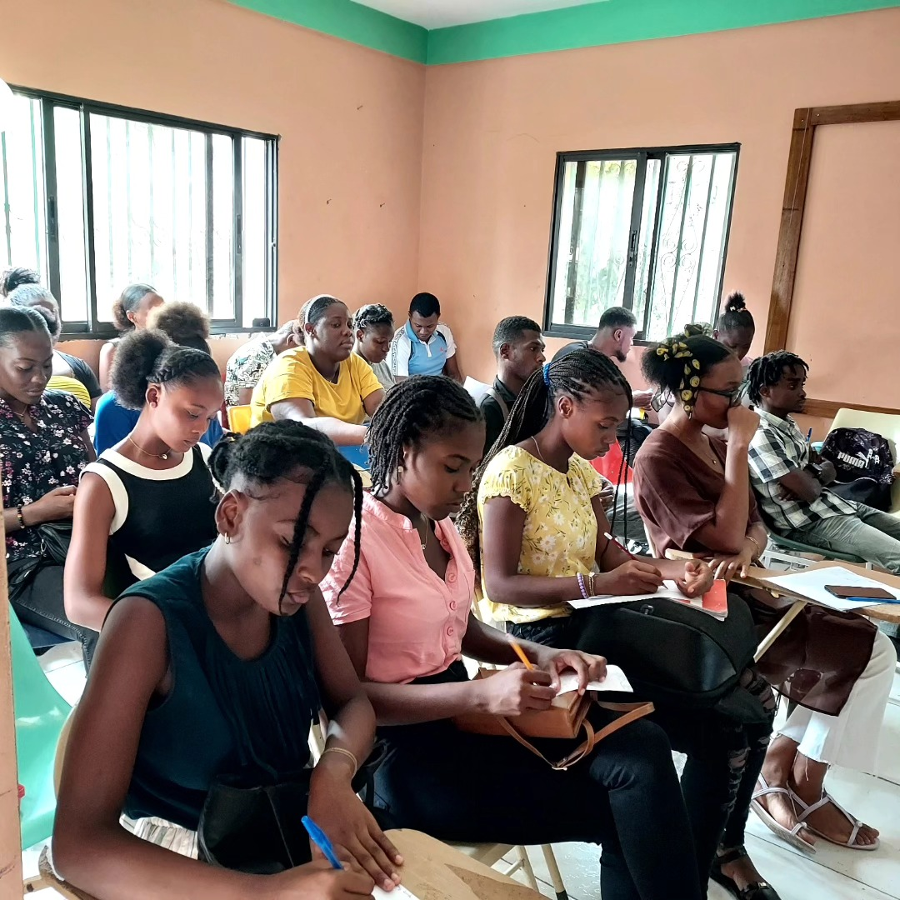
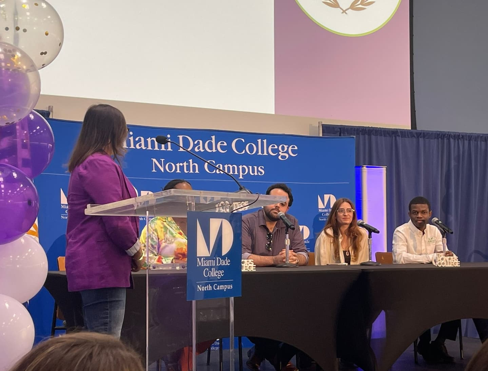
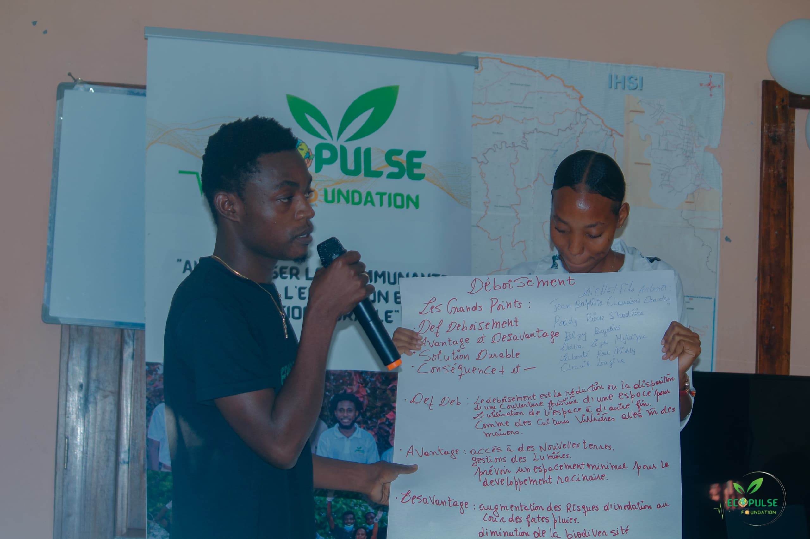
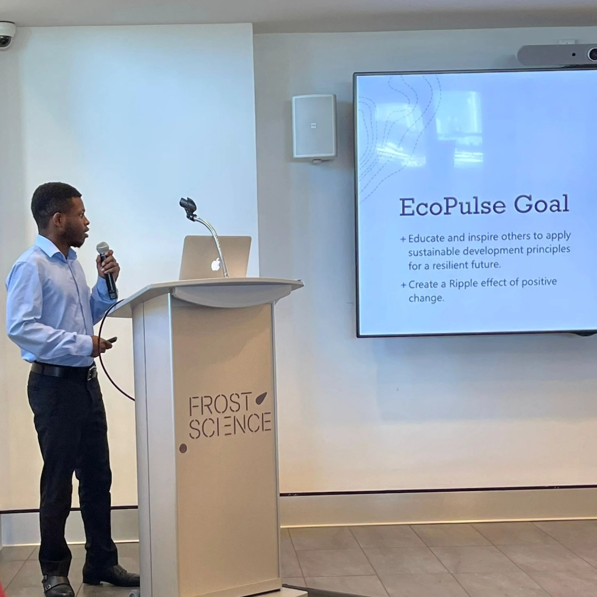
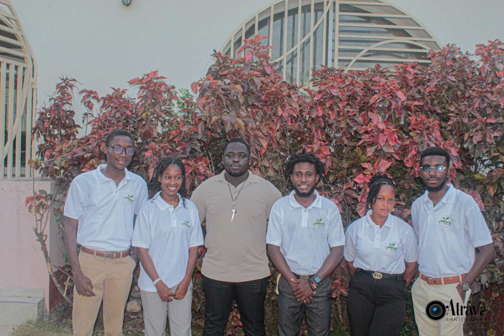
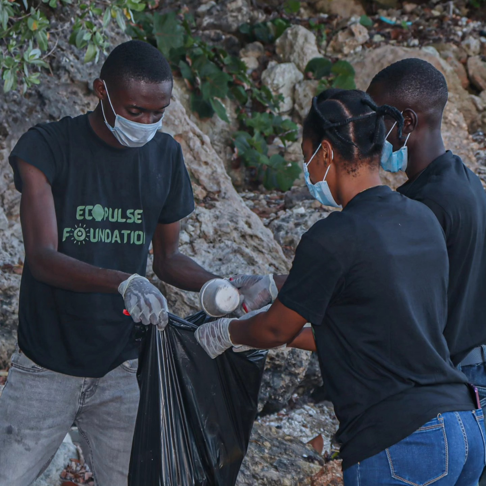
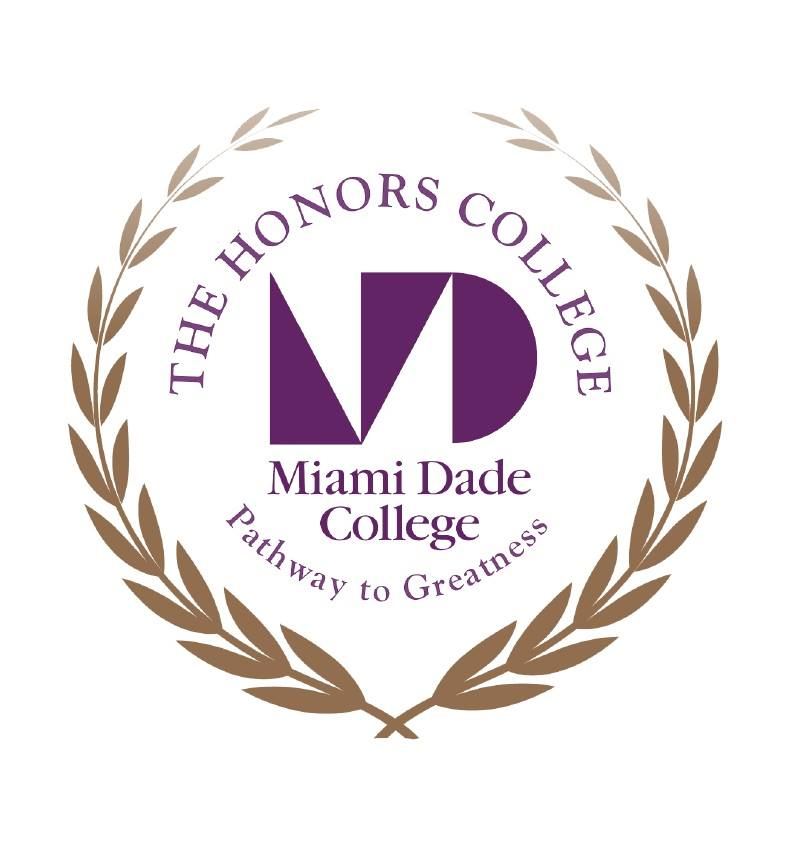
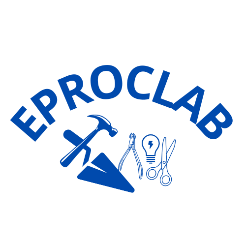
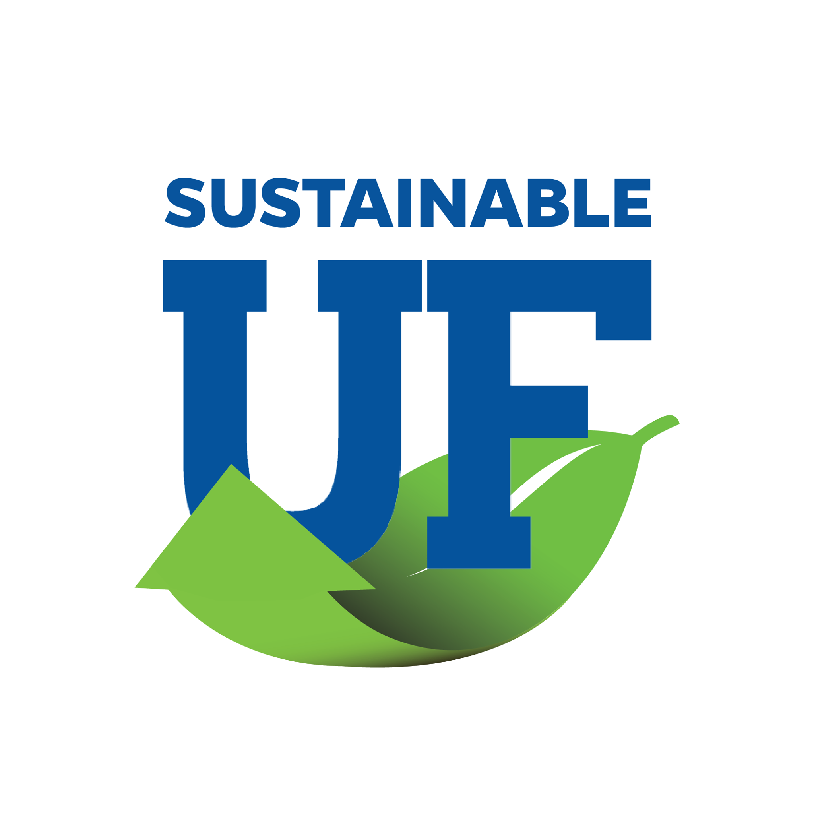
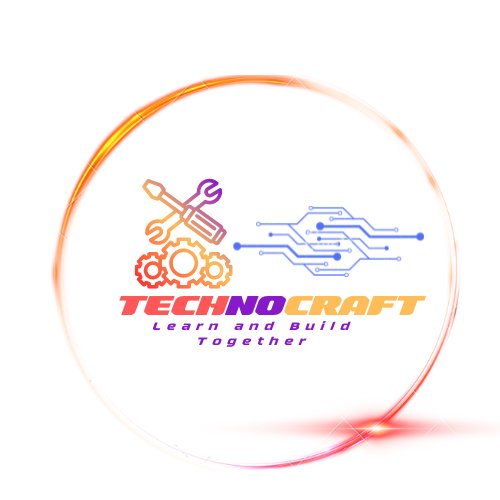

Notre mission
Éduquer, mobiliser et accompagner les jeunes et les communautés vers des pratiques écologiques qui améliorent durablement leur environnement et leur qualité de vie.
Par nous, pour nous
EcoPulse Foundation est une organisation à but non lucratif haïtienne qui transforme l’éducation environnementale en actions concrètes, accessibles et durables pour les jeunes et les communautés.
Découvrir notre mission


Notre raison d’être
Notre mission est de promouvoir des pratiques durables et d’autonomiser les communautés grâce à l’éducation, à l’innovation et à des actions environnementales positives.
Nous croyons que les solutions les plus durables naissent lorsque les jeunes disposent des connaissances, des outils et de la confiance nécessaires pour répondre aux défis de leur propre communauté.
À travers nos formations, nos campagnes de sensibilisation et nos initiatives d’assainissement, nous rapprochons l’apprentissage de l’action et l’action de l’impact.
Éduquer, mobiliser et accompagner les jeunes et les communautés vers des pratiques écologiques qui améliorent durablement leur environnement et leur qualité de vie.
Une Haïti où chaque communauté possède les connaissances, les capacités et les opportunités nécessaires pour bâtir un avenir sain, résilient et autonome.
Associer formation, leadership local, innovation et engagement communautaire afin de créer des solutions adaptées au contexte et capables de durer.



Notre histoire
EcoPulse Foundation est née d’une vision : celle d’un Haïti plus propre, plus responsable et plus engagé envers son environnement.
L’idée a été présentée pour la première fois au Frost Science Museum de Miami par le fondateur Quesnay Lundy, marquant le début d’un rêve devenu réalité.
Officiellement lancée en mai 2025 à Jérémie, dans le département de la Grand’Anse, l’organisation a déjà mis en œuvre plusieurs initiatives d’impact, dont le programme TREES, axé sur la formation et la mobilisation de jeunes autour de la protection de l’environnement.
Ce parcours témoigne d’une conviction profonde : le changement durable commence par la jeunesse et l’éducation.
EcoPulse Foundation est enregistrée en Floride et reconnue comme organisation caritative 501(c)(3) aux États-Unis.
Ce qui nous guide
Agir avec transparence, responsabilité et respect dans chacune de nos décisions.
Donner aux jeunes les moyens de devenir les acteurs du changement qu’ils souhaitent voir.
Privilégier des solutions réalistes, utiles et capables de continuer au-delà d’un seul projet.
Unir les compétences, les expériences et les ressources autour d’une vision commune.
Leadership
Une équipe engagée qui met ses compétences, son expérience et son énergie au service de la mission d’EcoPulse.
Président & CEO
Ingénieur et leader communautaire, il dirige la vision stratégique d’EcoPulse et développe des programmes qui relient technologie, éducation et développement durable.
Vice-président
Il contribue à la structuration de l’organisation, à la coordination des équipes et au développement d’une culture de responsabilité et d’efficacité.
Chief Operating Officer
Il supervise la mise en œuvre opérationnelle des projets et veille à transformer les objectifs de l’organisation en actions concrètes et mesurables.
Chief Financial Officer
Elle accompagne la gestion financière, la planification des ressources et la construction de mécanismes durables pour soutenir la croissance de l’organisation.
Le changement durable ne vient pas seulement de ce que nous faisons pour une communauté, mais de ce que nous lui donnons les moyens de faire par elle-même.
EcoPulse Foundation
Construire ensemble
Nous remercions les institutions, entreprises et organisations qui partagent notre engagement envers l’éducation environnementale et l’action communautaire.

Votre logo
Votre logo
Votre logo
Votre logoDevenez partenaire